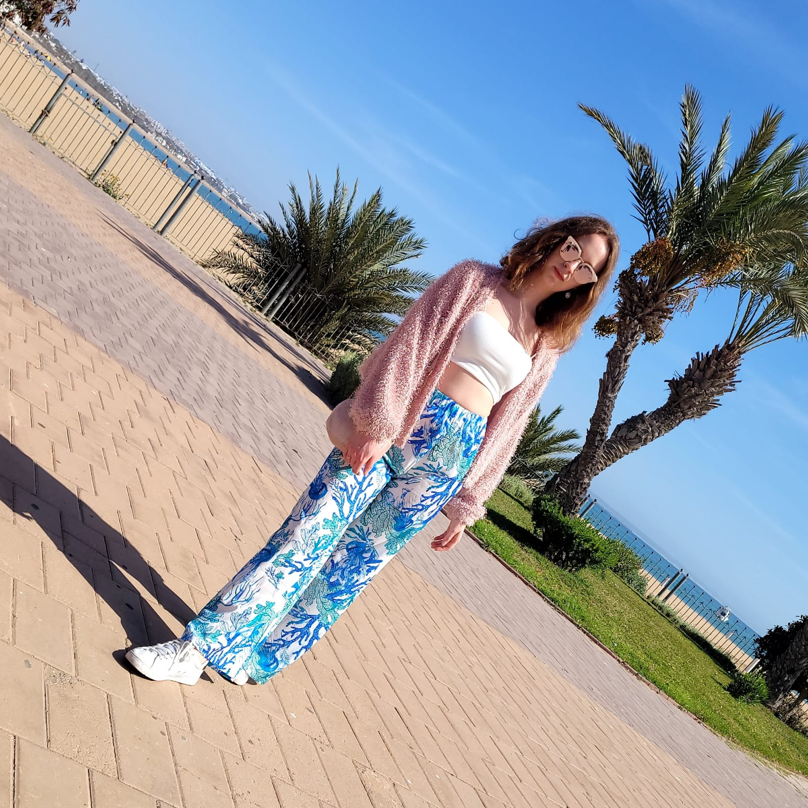
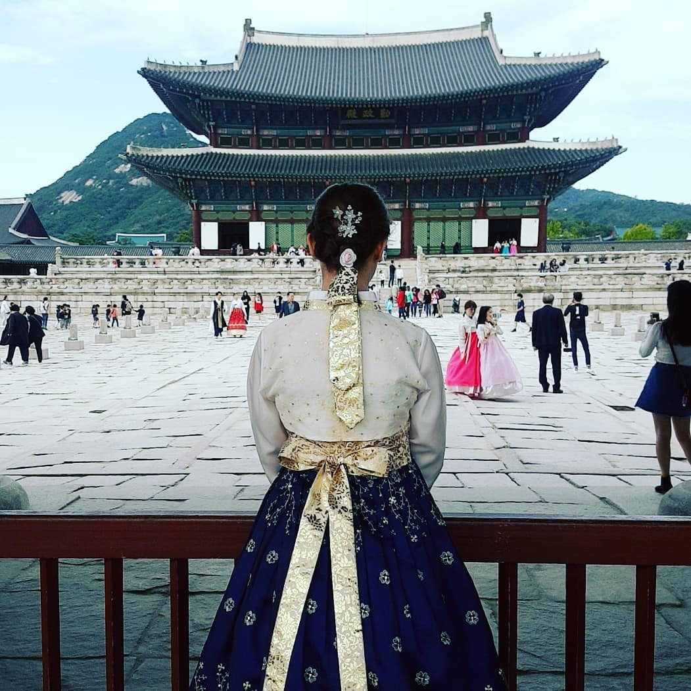
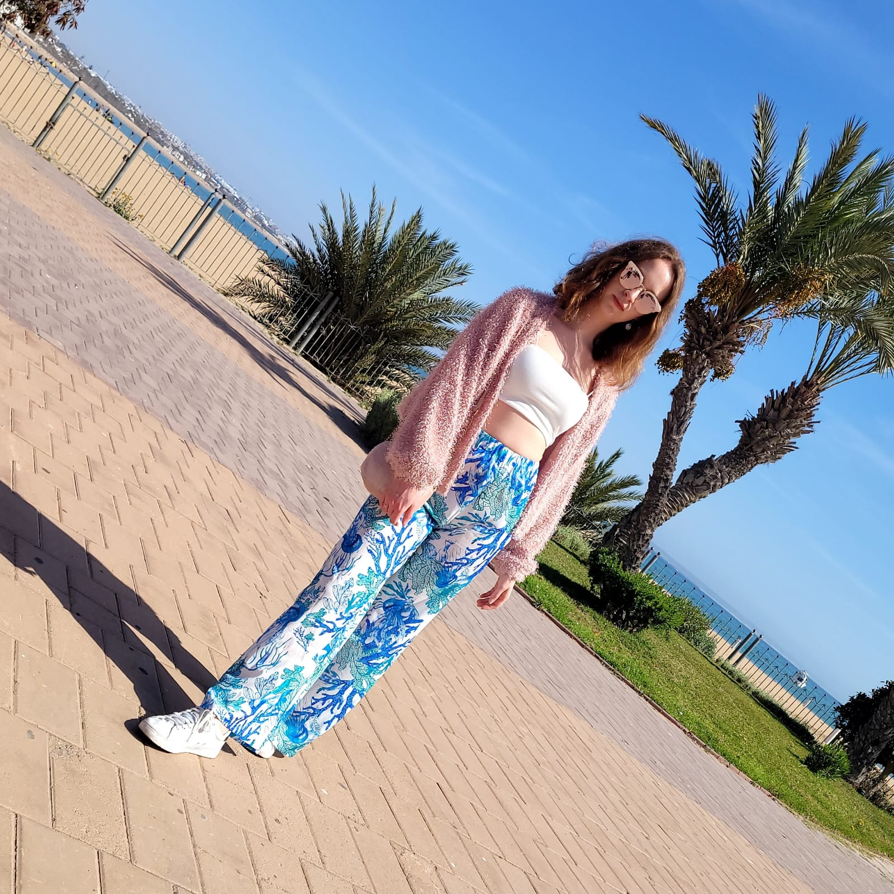
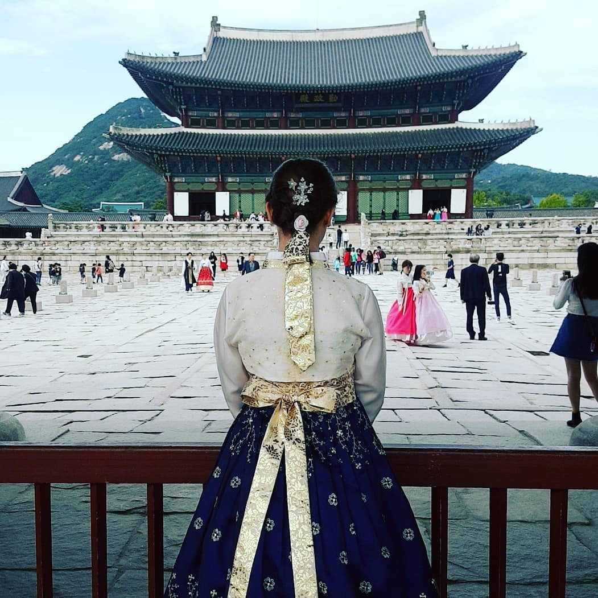

À propos de moi
 


Coucou ! Moi, c’est Lauriane, j’ai 29 ans et je vis sur la Côte
d’Azur. 🏖️
Depuis bientôt 10 ans, je pars à la découverte du monde pour en capturer la beauté à travers
mes photos. Tout a commencé en 2016 avec un premier voyage à Valence, puis un premier voyage
en solo à Londres en 2017.
En 2018, j’ai vécu une aventure inoubliable : une année entière en visa vacances-travail en
Corée du Sud.
De retour en France, j’ai vécu trois ans à Paris, entre 2019 et 2022, ce qui m’a permis de
multiplier les petits séjours ponctuels en Europe.
Finalement, je suis retournée vivre dans le Sud, mais ça ne m’a pas empêchée de continuer à
explorer, plus loin et plus longtemps.
Depuis, je visite régulièrement de nouveaux horizons, en prenant le temps de découvrir plusieurs
villes à chaque voyage.
Récemment, une nouvelle passion a pris forme : le code !
Pour pratiquer l’HTML et le CSS, j’ai eu envie de créer ce site pour rassembler tous mes
voyages et partager une sélection de mes plus belles photos. 📸
Veuillez noter que certaines destinations n’ont que quelques photos, tout simplement parce que
j’y suis restée très peu de temps (comme Toronto, Cologne ou Nice).
D’autres, comme Bruxelles, Londres ou Valence, datent de mes tout premiers voyages, et les photos
sont parfois un peu mal cadrées... 😅
J’ai quand même voulu les inclure pour garder une trace de ces souvenirs. 🌸
Sous chaque ville, j'ai noté les années dont datent les photos. Pour certaines destinations visitées
plusieurs fois, je n’ai indiqué les années que lorsqu’il y avait des photos à montrer.
Mes photos les plus récentes (depuis 2024) ont été prises avec un Samsung Galaxy S23.
J’espère que vous passerez un joli moment ici, et que cela vous donnera peut-être envie de partir
explorer à votre tour ! 🌍💫